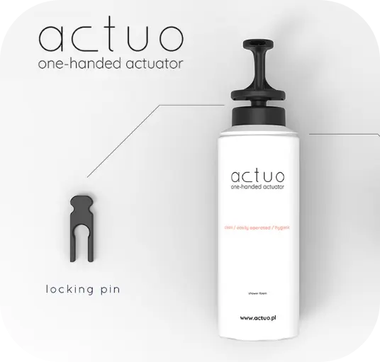
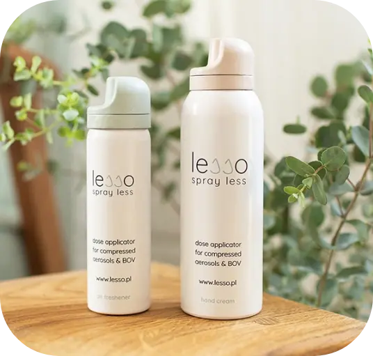
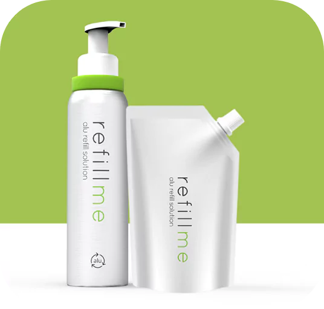

-
Développement de produits
Le département R&D d'Aerosol Service met l'accent sur l'innovation. Notre travail se base sur trois piliers. Nous réalisons des études de marché détaillées pour nous tenir au courant des tendences et satisfaire les besoins futurs du marché. Nous sommes à l'écoute de nos clients, en découvrant leurs attentes et en les transformant en solutions pratiques. Nous sommes fiers de cette coopération fondée sur leurs avis qui nous inspirent à créer les produits de qualité supérieure. Avec nous, vous découvrirez l'innovation qui ne connaît pas de limites. Réjoignez notre mission - ensemble, nous créons le futur.

-
Fabrication sous contrat
Nous sommes experts en remplissage d'une variété de récipients : aluminium, acier, verre et plastique PET, entre autres. Notre passion de la précision et la perfection nous inspire à fournir les services de qualité supérieure. Quels que soient vos besoins et spécifications, nous offrons les solutions adaptées à votre produit. Accédez au niveau supérieur avec notre service flexible de production sous contrat.

-
Marques privées
Nous créons les produits basés sur nos propres formules qui répondent à vos exigences particulières. Votre marque bénéficie des produits de qualité supérieure et de caractère authentique. Accédez au niveau supérieur avec notre service flexible et professionnelle pour les marques privées qui fidélise les clients et garantit le succès.

-
Fabrication d'emballages
Nous fabriquons les récipients en aluminium de qualité supérieure. Grâce à nos propres lignes de production de conteneurs et de remplissage, ainsi qu'au département R&D experimenté, nous sommes en mesure de vous fournir un produit complet. Votre produit sera fabriqué de A à Z en un seul lieu, ce qui a une influence énorme sur la qualité et le délai d'exécution.


Nos innovations
-
Actuo
Actuo est le premier applicateur manipulable d'une seule main, sans avoir à tenir la boîte. Son design hors de commun rend l'application encore plus facile et permet de maintenir le produit propre, en assurant une meilleure hygiène lors de l'utilisation. Actuo convient aux récipients de toute taille et peut être utilisé avec plusieurs produits sous forme de mousse ou gel.
- 
-
Spray’n’Use
SPRAY’N’USE APPLICATOR est un produit 2 en 1. Il contient les mini-sprays interchangeables et un applicateur adapté à des besoins spécifiques. Il se distingue par son format poche, facilité d'utilisation et application précise. L'absence du contact direct avec les mains garantit la proprété et la sécurité. Le produit est hermétiquement fermé donc ne s'évapore pas ni ne se déverse pas.

-
Lesso
Lesso est un applicateur doseur conçu spécialement pour les aérosols à air compimé et en technologie sac sur valve. Son objectif principal est d'apprendre aux consommateurs d'utiliser le produit de façon informée. Une seule application suffit ! L'utilisation de Lesso est très facile. Une fois appuyé avec le doigt d'une côté, l'applicateur tournera. La conception spéciale de l'applicateur permet d'ouvrir temporairement la valve et d’appliquer la quantité adéquate de produit.
- 
-
Refillme
Refillme est la première solution sur le marché permettant de recharger les aérosols. Le produit se présente sous la forme d'une boîte en aluminium et d'un doypack, ce qui permet de recharger le produit original dans l'esprit de zero waste. Cette innovation respectueuse de l'environnement peut être employée avec plusieurs types de produits aux usages différents.
- 